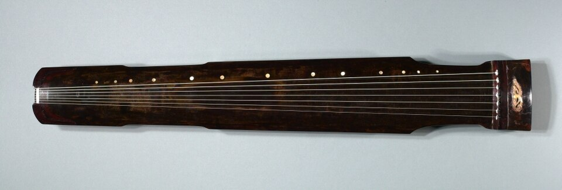
古琴 实物照片
古琴的一种实物形制。古琴通常有七根弦、十三个徽位，没有筝那样的一弦一柱。
作者 / 提供者：The original uploader was CharlieHuang at English Wikipedia .
原始条目：File:ZhongNiShi.jpg
授权：CC BY-SA 3.0
采用来源提供的预览版本，未改动主体内容；网页等比显示。原作者、来源及授权适用于该图片，项目代码的 MIT 许可证不替代图片授权。
图鉴的 84 个条目包含 64 张实物照片、2 幅历史图像及 18 幅原创结构示意。每幅图展示代表形制，不涵盖同名乐器的全部地域变体。
图片已包含在网站和离线包中。第三方图片各自遵循下列授权；本项目代码的 MIT 许可证不替代图片授权。图源页面和许可证链接需联网打开。
示意图用于认识主要部件，不能作为尺寸、指法、弦数或制器依据。结构参考见课程资料及 配图说明。

古琴的一种实物形制。古琴通常有七根弦、十三个徽位，没有筝那样的一弦一柱。
作者 / 提供者：The original uploader was CharlieHuang at English Wikipedia .
原始条目：File:ZhongNiShi.jpg
授权：CC BY-SA 3.0
采用来源提供的预览版本，未改动主体内容；网页等比显示。原作者、来源及授权适用于该图片，项目代码的 MIT 许可证不替代图片授权。
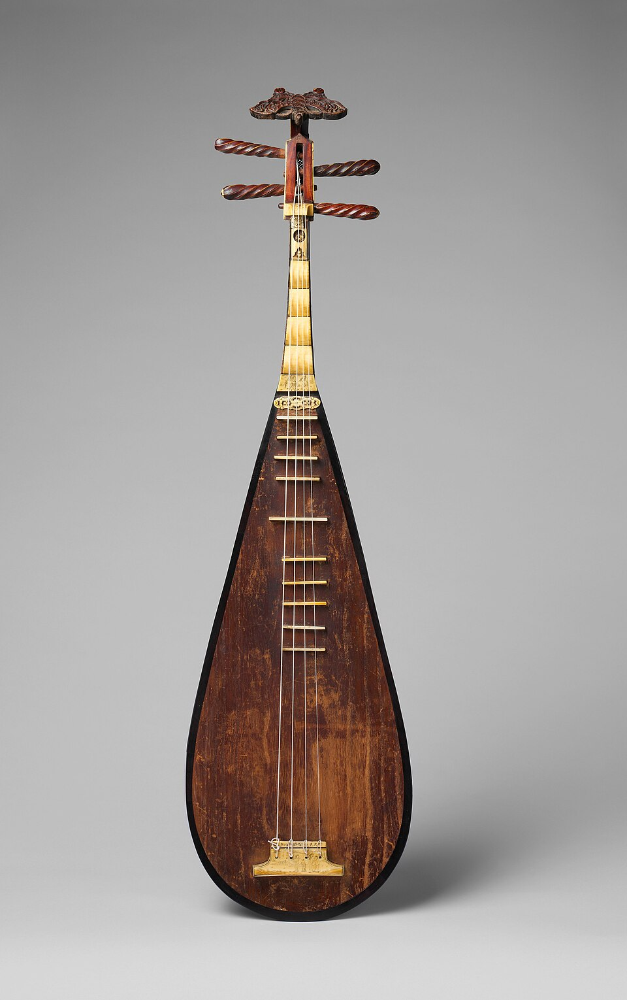
大都会艺术博物馆藏琵琶的正面。历史藏品的装饰、品位与当代演奏用琴可能不同。
作者 / 提供者：The Metropolitan Museum of Art
原始条目：File:Pipa_MET_DP216710.jpg
授权：CC0
采用来源提供的预览版本，未改动主体内容；网页等比显示。原作者、来源及授权适用于该图片，项目代码的 MIT 许可证不替代图片授权。
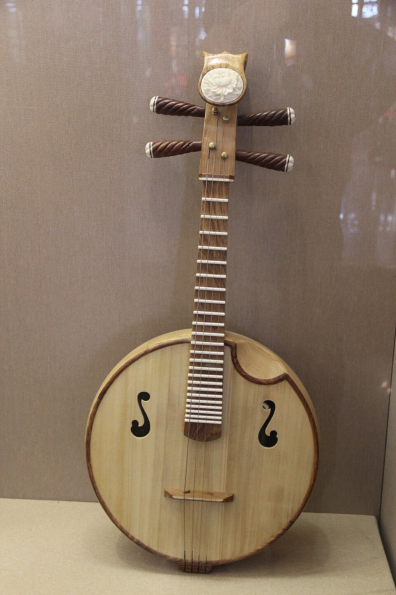
阮的一种实物形制。阮的圆形音箱与直琴颈很容易辨认。
作者 / 提供者：Gary Todd from Xinzheng, China
原始条目：File:Ruan, Tengwangge (Prince of Teng Pavilion) (30699085664).jpg
授权：CC0
采用来源提供的预览版本，未改动主体内容；网页等比显示。原作者、来源及授权适用于该图片，项目代码的 MIT 许可证不替代图片授权。
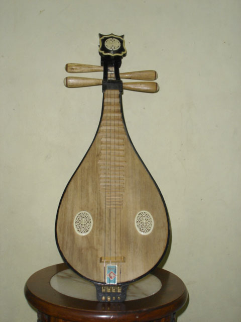
柳琴的一种实物形制。柳琴音箱较小，轮廓像柳叶或小梨形。
作者 / 提供者：Sun Tzu2
原始条目：File:Liuqin.jpg
授权：Public domain
采用来源提供的预览版本，未改动主体内容；网页等比显示。原作者、来源及授权适用于该图片，项目代码的 MIT 许可证不替代图片授权。
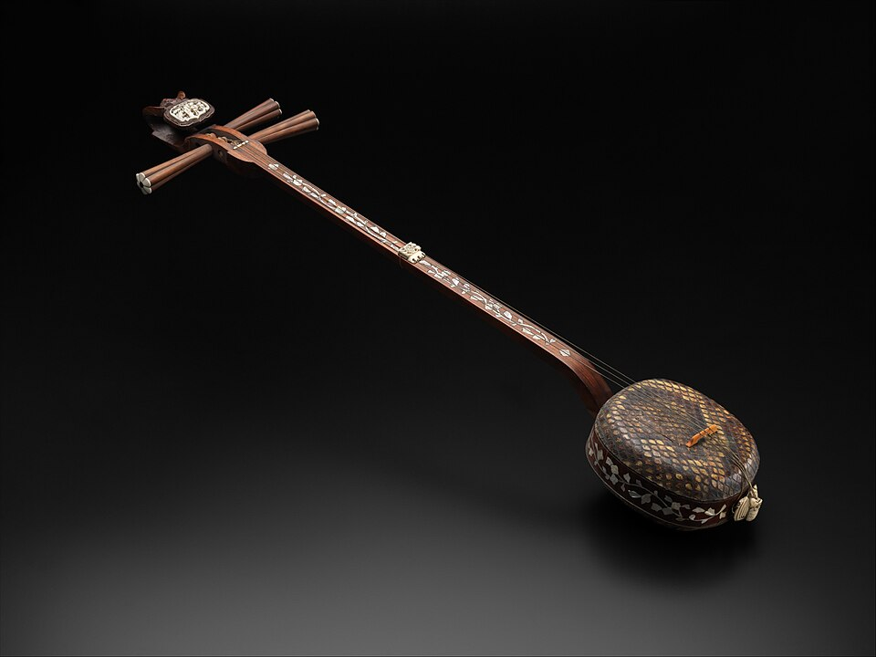
大都会艺术博物馆藏三弦。可观察长琴颈、三根弦与蒙皮琴箱。
作者 / 提供者：The Metropolitan Museum of Art
原始条目：File:Sanxian_(三弦_),_Chinese,_ca._1900_(The_Metropolitan_Museum_of_Art).jpg
授权：CC0
采用来源提供的预览版本，未改动主体内容；网页等比显示。原作者、来源及授权适用于该图片，项目代码的 MIT 许可证不替代图片授权。
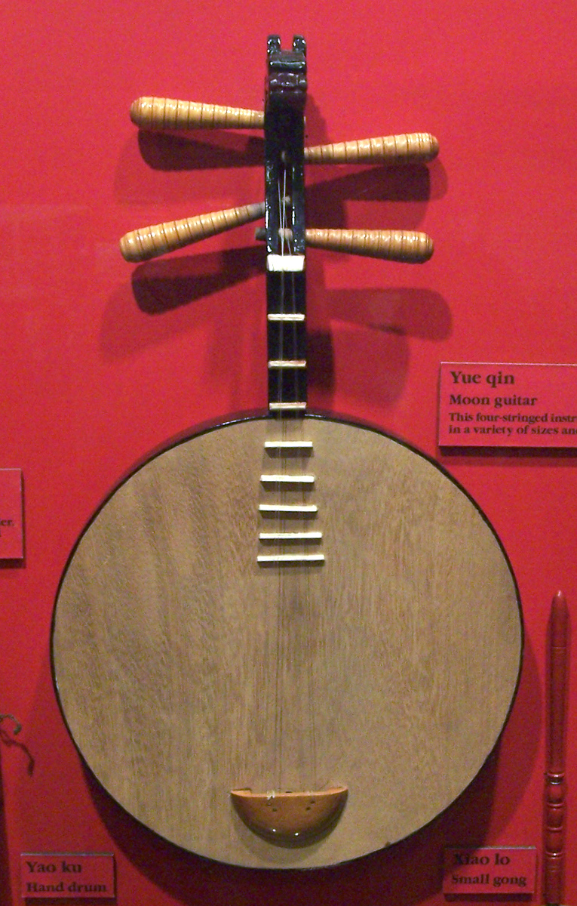
月琴的一种实物形制。月琴常见圆形音箱和较短琴颈，外形如满月。
作者 / 提供者：Larry D. Moore
原始条目：File:Moon_guitar.jpg
授权：CC BY 4.0
采用来源提供的预览版本，未改动主体内容；网页等比显示。原作者、来源及授权适用于该图片，项目代码的 MIT 许可证不替代图片授权。
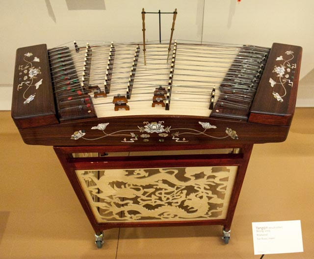
扬琴的一种实物形制。扬琴的多组琴弦张在平放的音箱上，现代常见外形近似梯形，以一对琴竹击弦。
作者 / 提供者：Frank Kovalchek from Anchorage, Alaska, USA
原始条目：File:Yangqin_-_MIM_PHX.jpg
授权：CC BY 2.0
采用来源提供的预览版本，未改动主体内容；网页等比显示。原作者、来源及授权适用于该图片，项目代码的 MIT 许可证不替代图片授权。
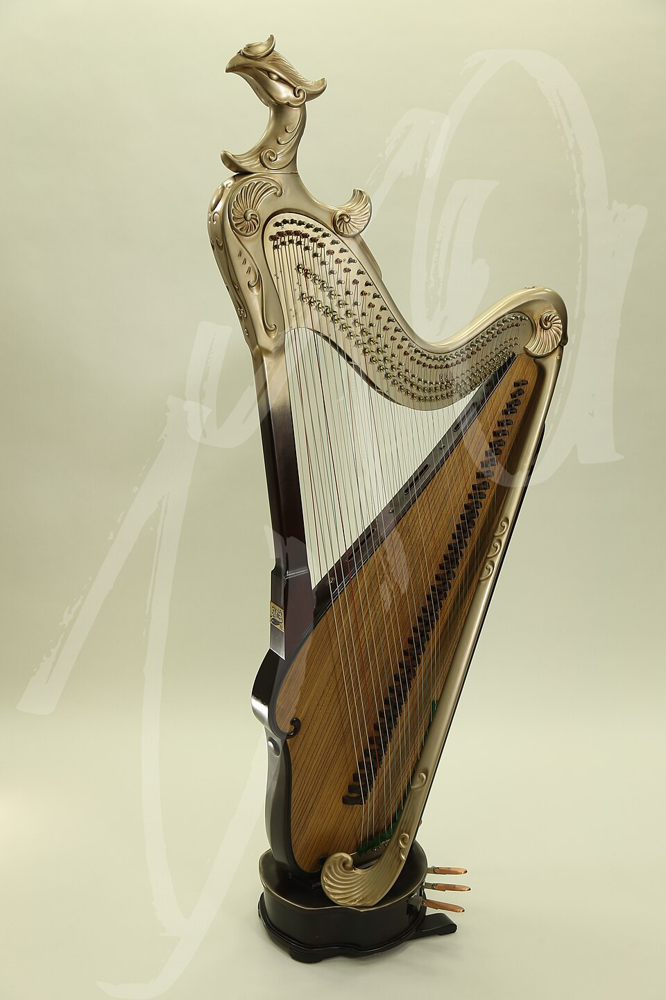
现代箜篌实物，展示双排弦的舞台形制；并非古代箜篌的统一外观。
作者 / 提供者：Tzhang0.0
原始条目：File:Modern Konghou made by Hongyun Factory.jpg
授权：CC BY-SA 4.0
采用来源提供的预览版本，未改动主体内容；网页等比显示。原作者、来源及授权适用于该图片，项目代码的 MIT 许可证不替代图片授权。
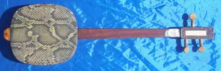
秦琴的一种实物形制。秦琴是有品的弹拨乐器，常见音箱呈梅花状或其他地方形制。
作者 / 提供者：Jo Dusepo
原始条目：File:Qinqin sid.jpg
授权：CC BY-SA 4.0
采用来源提供的预览版本，未改动主体内容；网页等比显示。原作者、来源及授权适用于该图片，项目代码的 MIT 许可证不替代图片授权。
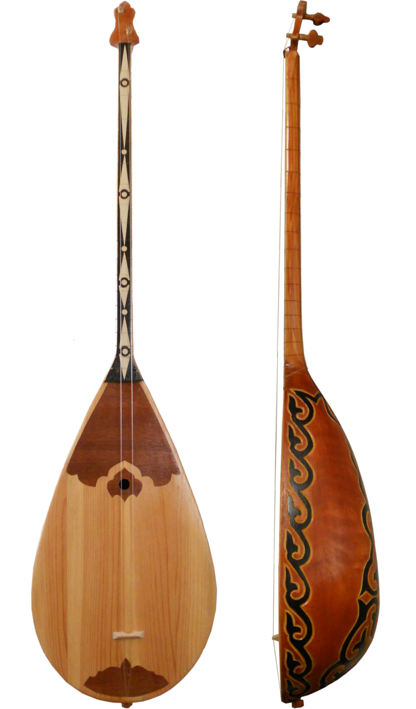
冬不拉正面与侧面，便于比较长琴颈与琴箱的厚度。
作者 / 提供者：User:Mizu basyo
原始条目：File:Kazakh_Dombra2.png
授权：CC BY-SA 3.0
采用来源提供的预览版本，未改动主体内容；网页等比显示。原作者、来源及授权适用于该图片，项目代码的 MIT 许可证不替代图片授权。
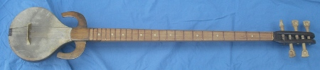
热瓦普的一种实物形制。热瓦普有长琴颈与小型共鸣箱，不同形制的弦列、蒙面和装饰有差异。
作者 / 提供者：Jo Dusepo
原始条目：File:Rawap.jpg
授权：CC BY-SA 4.0
采用来源提供的预览版本，未改动主体内容；网页等比显示。原作者、来源及授权适用于该图片，项目代码的 MIT 许可证不替代图片授权。
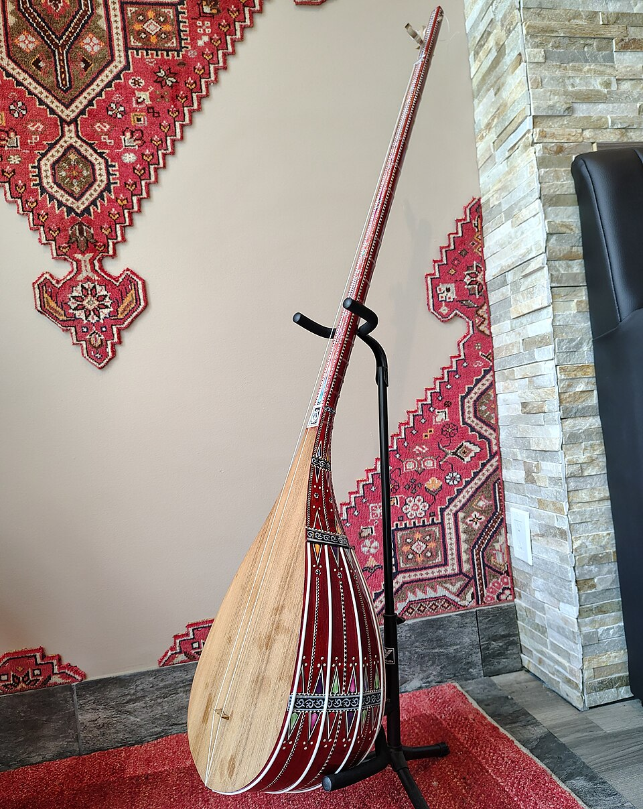
都塔尔的一种实物形制。都塔尔常见两根弦、细长琴杆与木制共鸣箱。
作者 / 提供者：Yuet Man Lee
原始条目：File:Dutar_inside_Muqam_Uyghur_Cuisine_(side_view).jpg
授权：CC BY-SA 4.0
采用来源提供的预览版本，未改动主体内容；网页等比显示。原作者、来源及授权适用于该图片，项目代码的 MIT 许可证不替代图片授权。
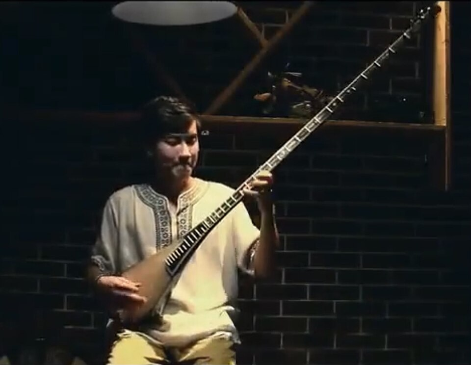
弹布尔的一种实物形制。弹布尔的琴颈修长，共鸣箱相对小，琴颈上有品位。
作者 / 提供者：Uyghur Television, https://www.youtube.com/channel/UCT_eQkm8S64O8A9_Dawvs-g
原始条目：File:Uyghur_tambur.jpg
授权：CC BY 3.0
采用来源提供的预览版本，未改动主体内容；网页等比显示。原作者、来源及授权适用于该图片，项目代码的 MIT 许可证不替代图片授权。
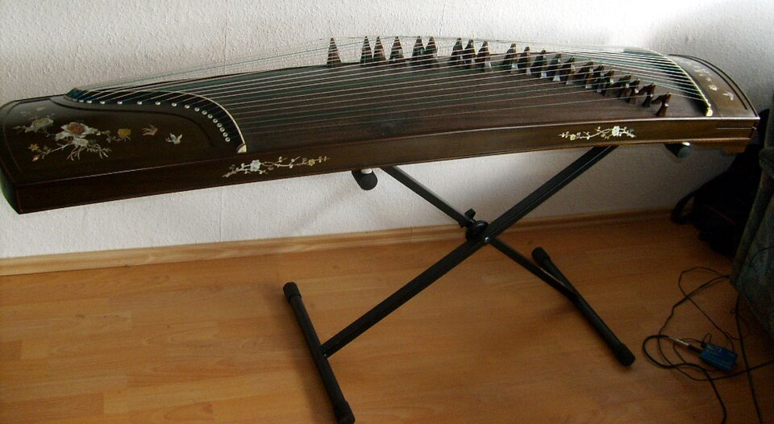
雅托噶的一种现代形制。不同流派、时代的弦数与尺寸会有变化。
作者 / 提供者：Shadowmaster2503
原始条目：File:Mongolian_yatga_front_view.JPG
授权：Public domain
采用来源提供的预览版本，未改动主体内容；网页等比显示。原作者、来源及授权适用于该图片，项目代码的 MIT 许可证不替代图片授权。
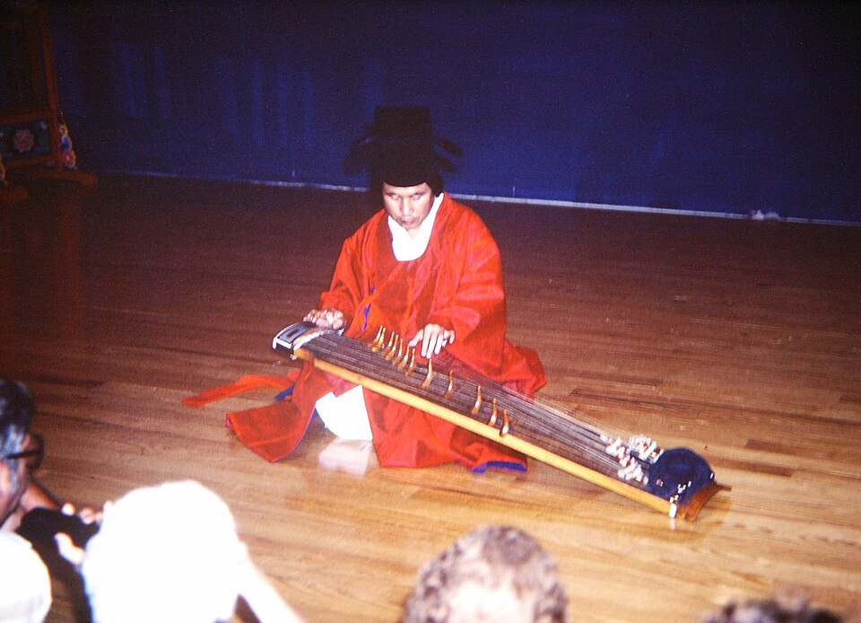
伽倻琴演奏照片，展示传统十二弦形制及摆放方式。
作者 / 提供者：Gary Lee Todd, Ph.D.
原始条目：File:Korean Ka Ya Kum (Gayageum), Traditional 12-string Instrument.jpg
授权：CC0
采用来源提供的预览版本，未改动主体内容；网页等比显示。原作者、来源及授权适用于该图片，项目代码的 MIT 许可证不替代图片授权。
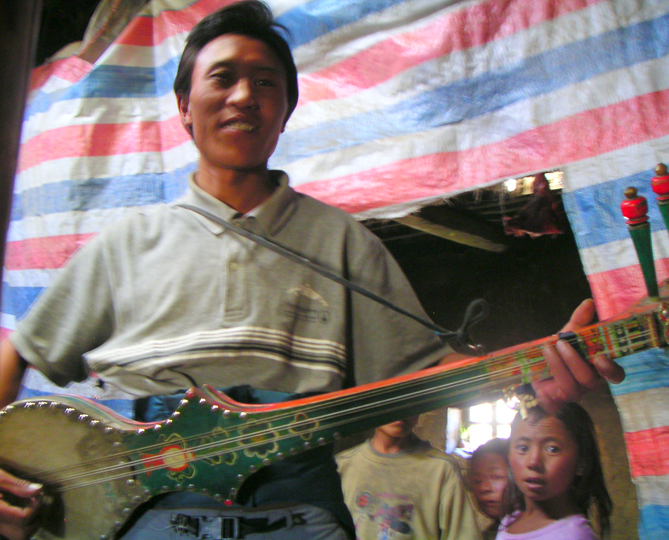
扎木聂演奏照片，可观察长颈、蒙皮琴箱及拨奏位置。
作者 / 提供者：Mikael Häggström
原始条目：File:Dranyen.png
授权：Public domain
采用来源提供的预览版本，未改动主体内容；网页等比显示。原作者、来源及授权适用于该图片，项目代码的 MIT 许可证不替代图片授权。
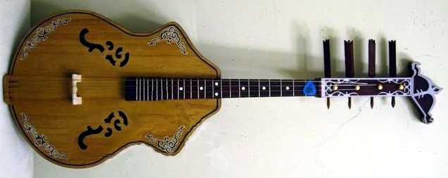
火不思实物的一种改良形制；历史形制与现代制作并不完全一致。
作者 / 提供者：Emma dusepo
原始条目：File:Huobosi.jpg
授权：CC0
采用来源提供的预览版本，未改动主体内容；网页等比显示。原作者、来源及授权适用于该图片，项目代码的 MIT 许可证不替代图片授权。
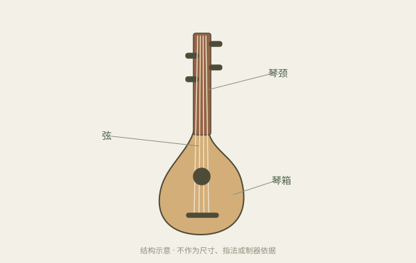
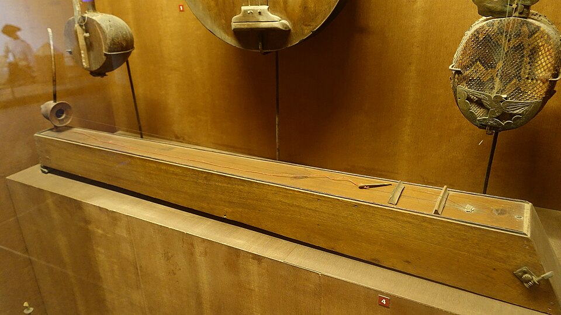
越南民族学博物馆所藏 Đàn bầu，供观察独弦琴的弦与摇杆结构。京族独弦琴与这一跨境相关形制有联系，具体制作与演奏传统应分别了解。
作者 / 提供者：Daderot
原始条目：File:Dan bau (monochord) - Vietnam Museum of Ethnology - Hanoi, Vietnam - DSC02538.JPG
授权：CC0
采用来源提供的预览版本，未改动主体内容；网页等比显示。原作者、来源及授权适用于该图片，项目代码的 MIT 许可证不替代图片授权。
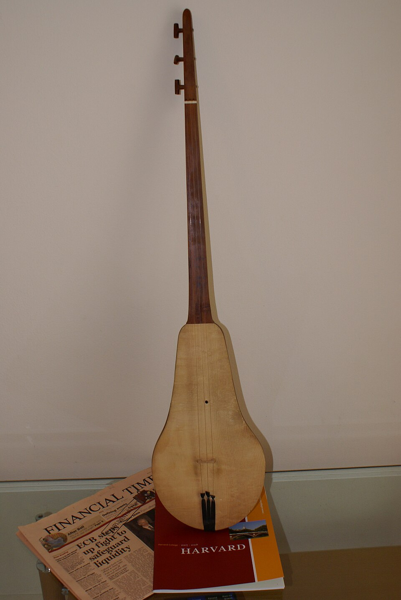
库姆孜实物，可观察无品的细长琴颈与琴箱。
作者 / 提供者：Beknazar Zh at en.wikipedia
原始条目：File:Kopuz.jpg
授权：CC BY-SA 3.0
采用来源提供的预览版本，未改动主体内容；网页等比显示。原作者、来源及授权适用于该图片，项目代码的 MIT 许可证不替代图片授权。
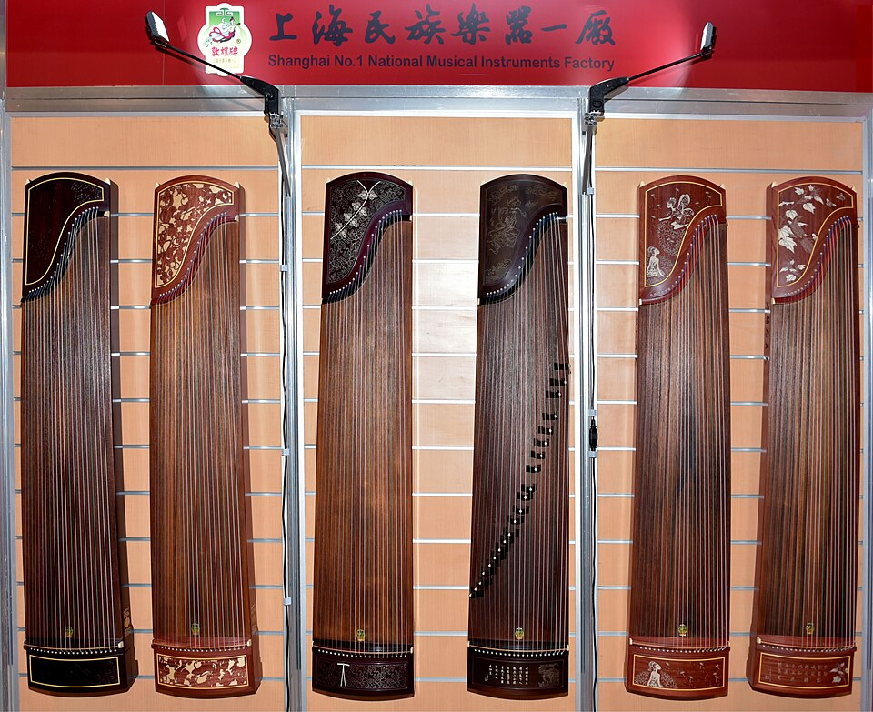
展览中的多台古筝，可观察长方形琴体、琴弦与活动筝码。
作者 / 提供者：Toglenn
原始条目：File:Guzheng_2020_by_Glenn_Francis.jpg
授权：CC BY-SA 4.0
采用来源提供的预览版本，未改动主体内容；网页等比显示。原作者、来源及授权适用于该图片，项目代码的 MIT 许可证不替代图片授权。
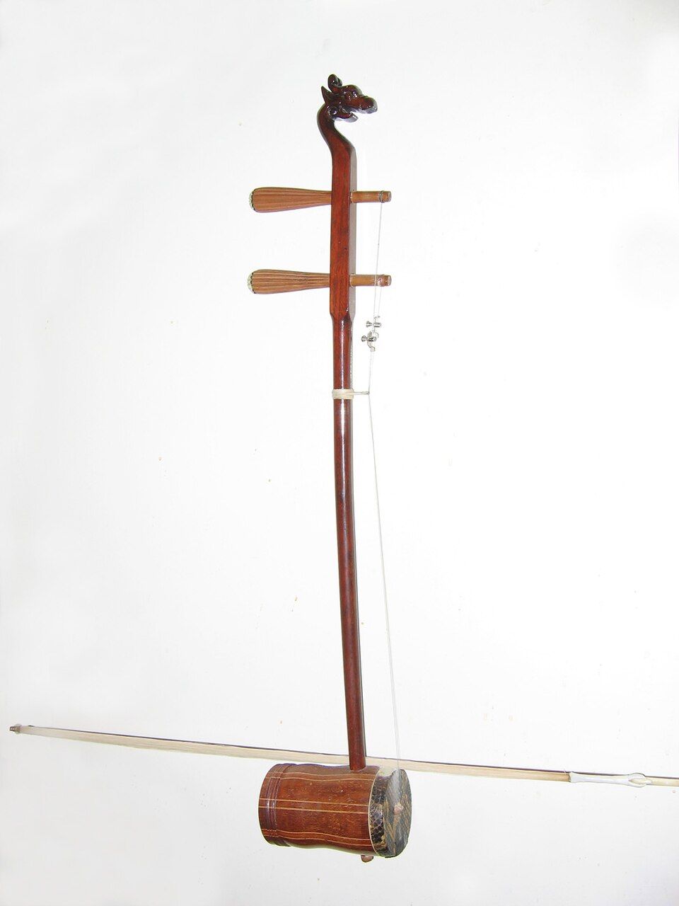
高胡的一种实物形制。高胡的琴筒通常比二胡小，有两根弦与弓。
作者 / 提供者：LDHan at English Wikipedia
原始条目：File:Gaohu_1.jpg
授权：Public domain
采用来源提供的预览版本，未改动主体内容；网页等比显示。原作者、来源及授权适用于该图片，项目代码的 MIT 许可证不替代图片授权。
演奏中的粤式中胡，可比较琴筒大小及弓弦的位置。
作者 / 提供者：Alex Stoll / Flickr user: N22YF ( https://www.flickr.com/photos/n22yf/ )
原始条目：File:Zhonghuplayer.jpg
授权：CC BY-SA 2.0
采用来源提供的预览版本，未改动主体内容；网页等比显示。原作者、来源及授权适用于该图片，项目代码的 MIT 许可证不替代图片授权。
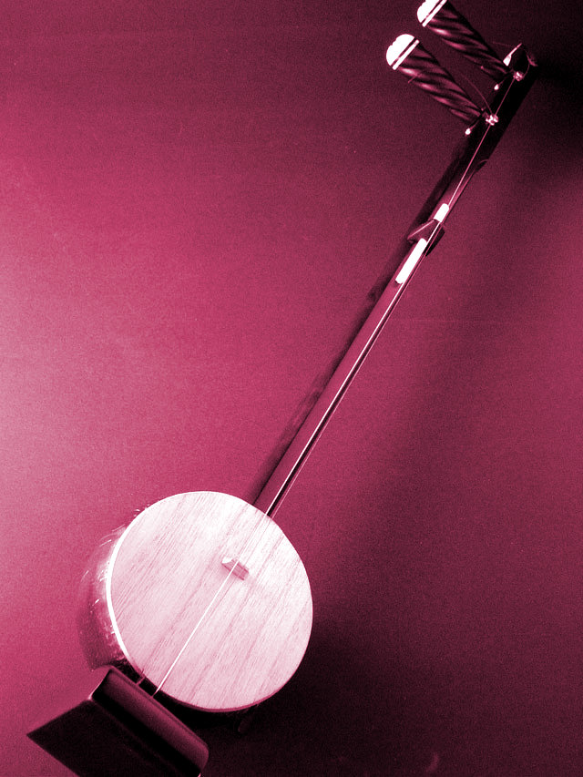
板胡的一种实物形制。板胡的琴筒前面使用木质薄板，是区别于常见蒙皮胡琴的重要线索。
作者 / 提供者：Claireislovely
原始条目：File:Banhu.jpg
授权：Public domain
采用来源提供的预览版本，未改动主体内容；网页等比显示。原作者、来源及授权适用于该图片，项目代码的 MIT 许可证不替代图片授权。
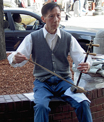
京胡演奏照片，可观察较短的琴杆与小型琴筒。
作者 / 提供者：Dan4th at English Wikipedia
原始条目：File:Jinghu_(1).jpg
授权：CC BY 2.5
采用来源提供的预览版本，未改动主体内容；网页等比显示。原作者、来源及授权适用于该图片，项目代码的 MIT 许可证不替代图片授权。
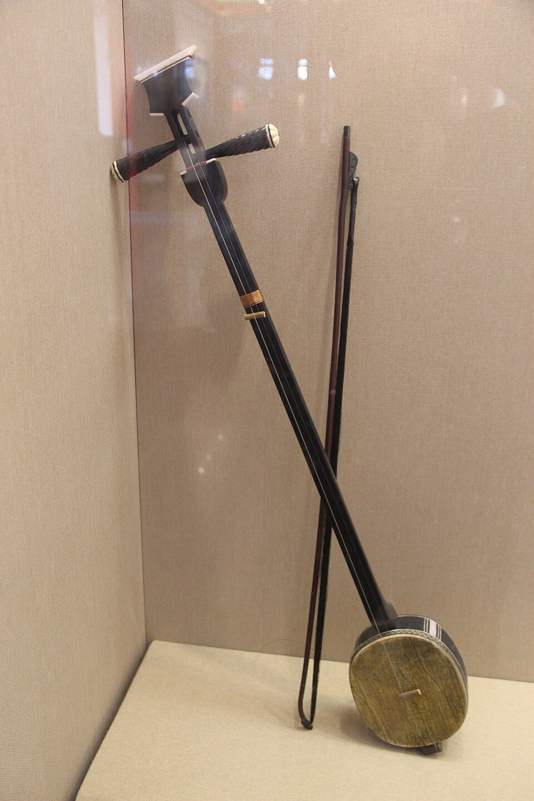
坠胡的一种实物形制。坠胡的琴杆较长，琴筒与指板结构适合其地方演奏方式。
作者 / 提供者：Gary Todd from Xinzheng, China
原始条目：File:Zhuiqin,_Tengwangge_(Prince_of_Teng_Pavilion)_(31393279322).jpg
授权：CC0
采用来源提供的预览版本，未改动主体内容；网页等比显示。原作者、来源及授权适用于该图片，项目代码的 MIT 许可证不替代图片授权。
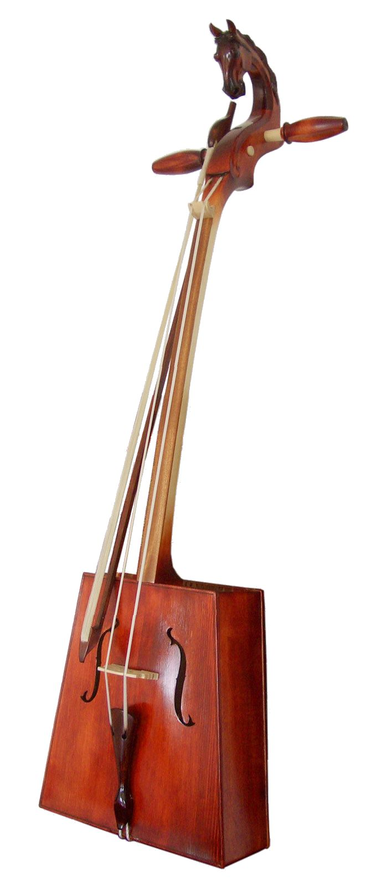
蒙古国式马头琴的一种实物形制，琴首、梯形琴箱与弦是辨认线索。
作者 / 提供者：Mizu_Basyo
原始条目：File:Morin_Khuur,_Today's_North_Mongolian_Style.jpg
授权：CC BY-SA 3.0
采用来源提供的预览版本，未改动主体内容；网页等比显示。原作者、来源及授权适用于该图片，项目代码的 MIT 许可证不替代图片授权。
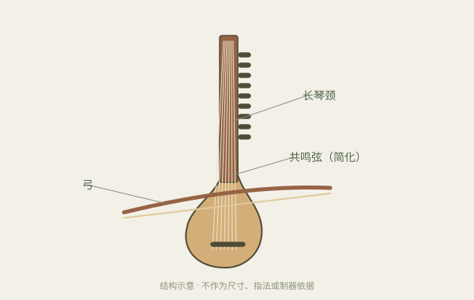
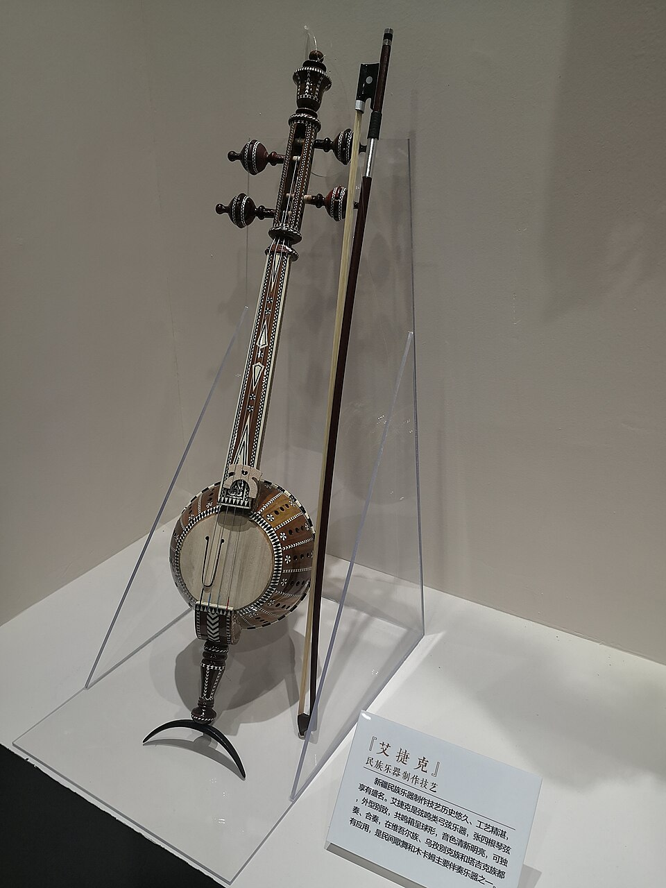
改良艾捷克实物。传统形制与改良形制的琴箱、弦制有所区别。
作者 / 提供者：HaziiDozen
原始条目：File:改良艾捷克（2）.jpg
授权：CC BY-SA 4.0
采用来源提供的预览版本，未改动主体内容；网页等比显示。原作者、来源及授权适用于该图片，项目代码的 MIT 许可证不替代图片授权。
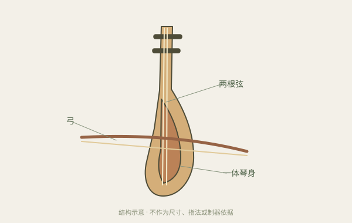
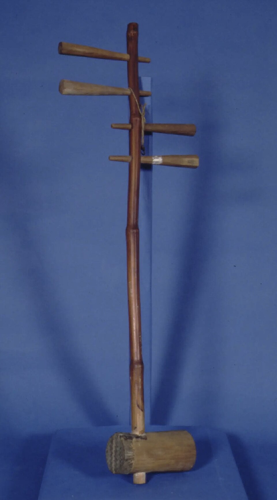
四胡的一种实物形制。四胡有四根弦，常按两组同音弦组织。
作者 / 提供者：Auckland Museum
原始条目：File:Sihu_(Castle_Collection).jpg
授权：CC BY 4.0
采用来源提供的预览版本，未改动主体内容；网页等比显示。原作者、来源及授权适用于该图片，项目代码的 MIT 许可证不替代图片授权。
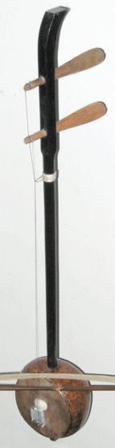
椰胡的一种实物形制。椰胡以椰壳作共鸣箱是鲜明特征，常见木质面板与两根弦。
作者 / 提供者：LDHan
原始条目：File:Yehu.png
授权：Public domain
采用来源提供的预览版本，未改动主体内容；网页等比显示。原作者、来源及授权适用于该图片，项目代码的 MIT 许可证不替代图片授权。
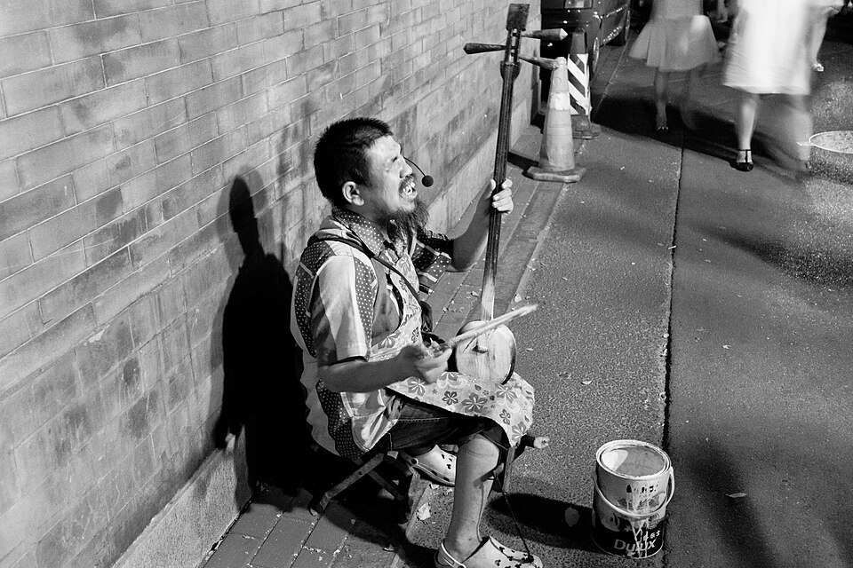
擂琴街头演奏照片，展示琴杆、琴筒与弓的相对位置。
作者 / 提供者：Nikolaj Potanin from Russia
原始条目：File:Blind street musician playing 擂琴 (9451424508).jpg
授权：CC BY-SA 2.0
采用来源提供的预览版本，未改动主体内容；网页等比显示。原作者、来源及授权适用于该图片，项目代码的 MIT 许可证不替代图片授权。
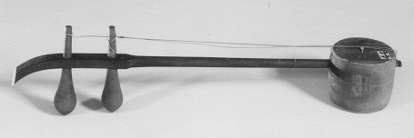
大都会艺术博物馆藏、广东佛山金声号制作的十九世纪二弦。历史藏品不等于所有现代二弦的统一规格。
作者 / 提供者：Unknown photographer, released into public domain by the Metropolitan Museum of Art on the image's web page
原始条目：File:Erxian,19th century, made by the Golden Tone Workshop, at the Metropolitan Museum of Art.png
授权：CC0
采用来源提供的预览版本，未改动主体内容；网页等比显示。原作者、来源及授权适用于该图片，项目代码的 MIT 许可证不替代图片授权。
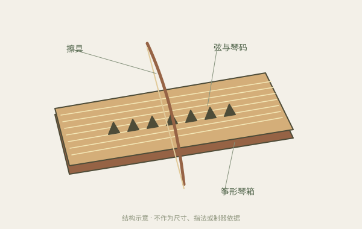
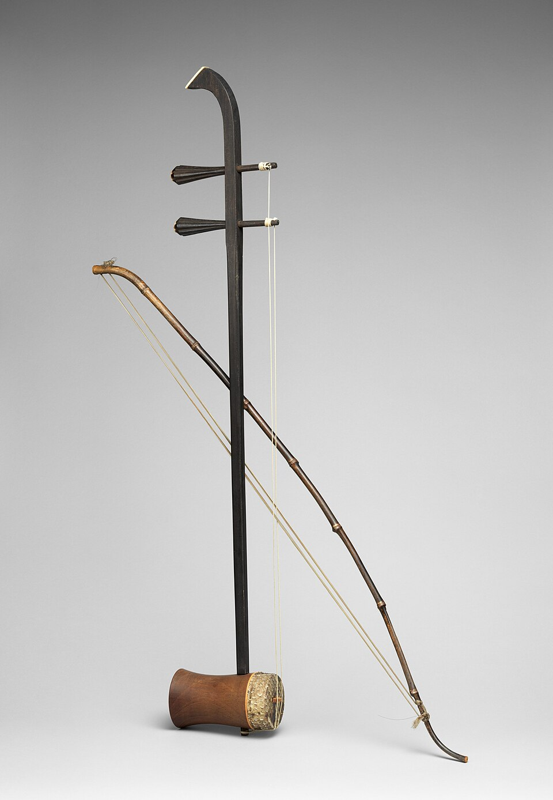
大都会艺术博物馆藏二胡。观察琴杆、双弦、琴筒与弓的位置。
作者 / 提供者：The Metropolitan Museum of Art（来源页摄影者未署名）
原始条目：File:Erhu_in_the_Mets.jpg
授权：CC0
采用来源提供的预览版本，未改动主体内容；网页等比显示。原作者、来源及授权适用于该图片，项目代码的 MIT 许可证不替代图片授权。
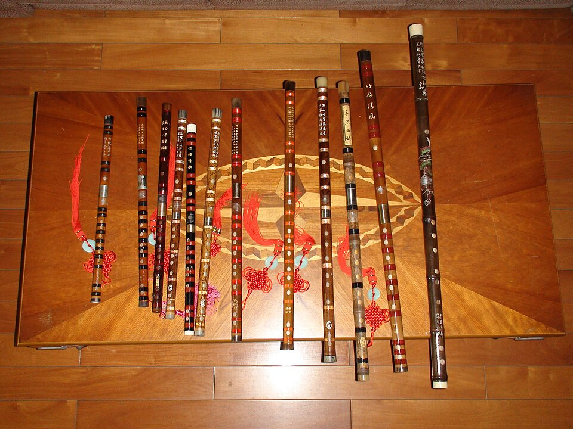
多支不同长度的竹笛。长度和调性相关，不能只凭外观确定准确音高。
作者 / 提供者：David290
原始条目：File:Diffenent_sizes_of_Dizi.jpg
授权：CC BY-SA 3.0
采用来源提供的预览版本，未改动主体内容；网页等比显示。原作者、来源及授权适用于该图片，项目代码的 MIT 许可证不替代图片授权。
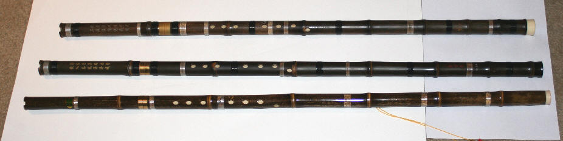
几支箫的外形对照。注意顶端吹口，具体孔位和长度随形制变化。
作者 / 提供者：Xiao Li
原始条目：File:Xiao Flute.jpg
授权：CC BY-SA 2.5
采用来源提供的预览版本，未改动主体内容；网页等比显示。原作者、来源及授权适用于该图片，项目代码的 MIT 许可证不替代图片授权。
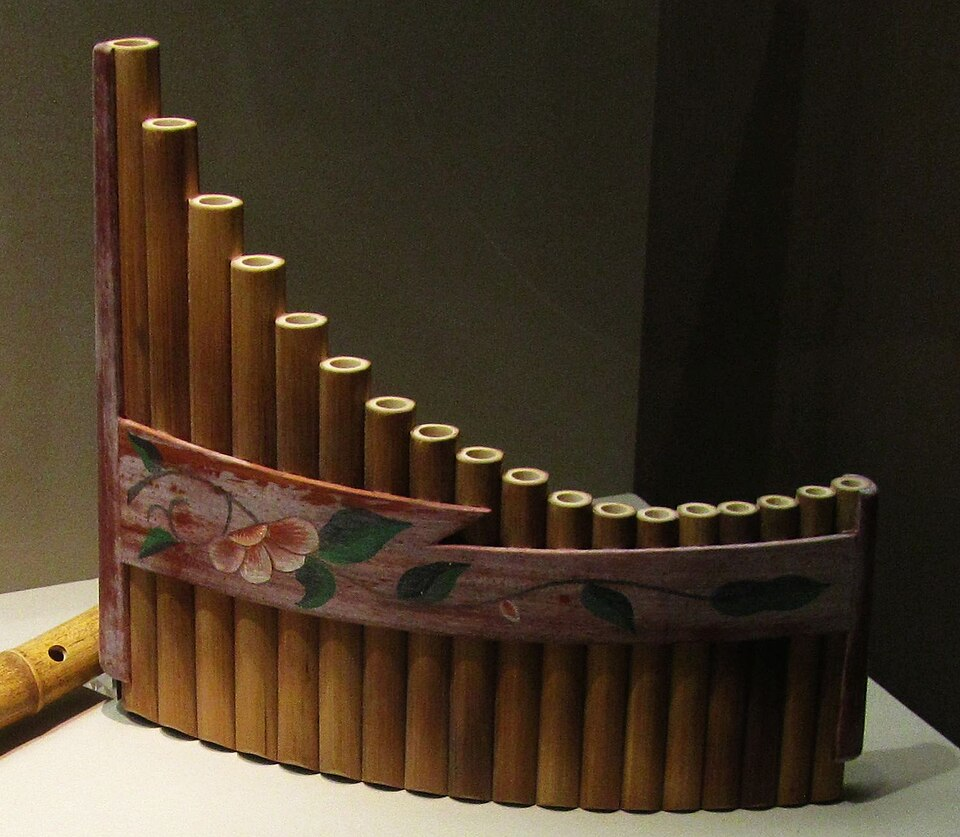
唐代排箫的现代复原品；展示多管排列，并非出土原件。
作者 / 提供者：Photograph: 猫猫的日记本
原始条目：File:Paixiao_of_the_Tang_Dynasty_-_reproduction.jpg
授权：CC BY-SA 4.0
采用来源提供的预览版本，未改动主体内容；网页等比显示。原作者、来源及授权适用于该图片，项目代码的 MIT 许可证不替代图片授权。
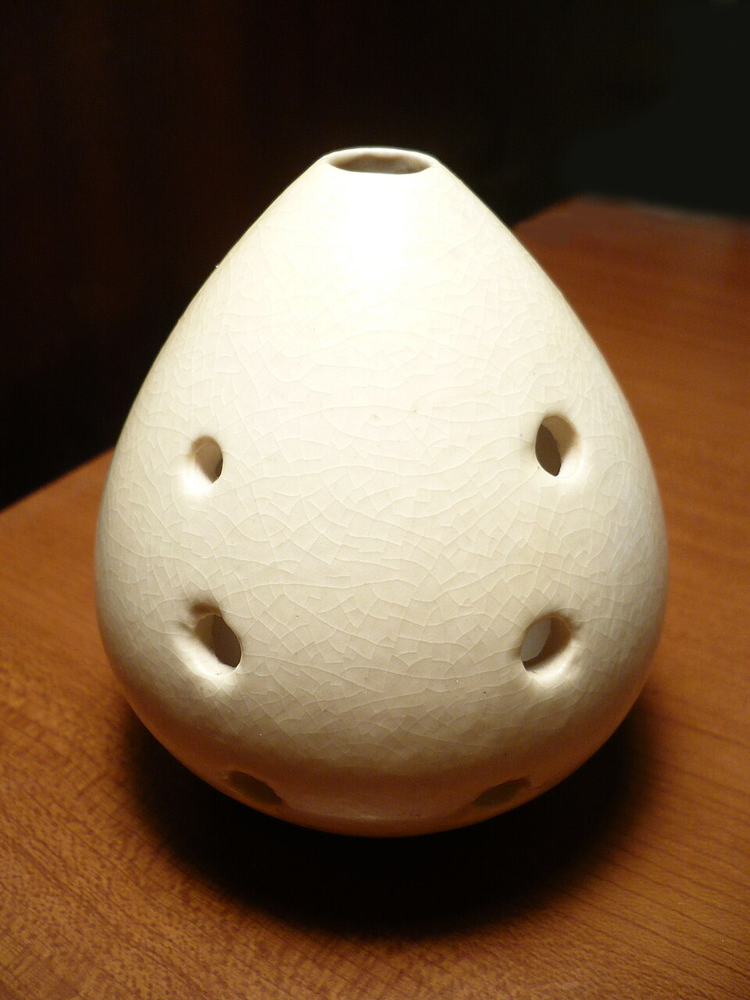
埙的一种实物形制。埙常以陶制中空腔体形成共鸣，有吹孔与若干指孔。
作者 / 提供者：Badagnani
原始条目：File:Xunfront.jpg
授权：CC BY-SA 3.0
采用来源提供的预览版本，未改动主体内容；网页等比显示。原作者、来源及授权适用于该图片，项目代码的 MIT 许可证不替代图片授权。
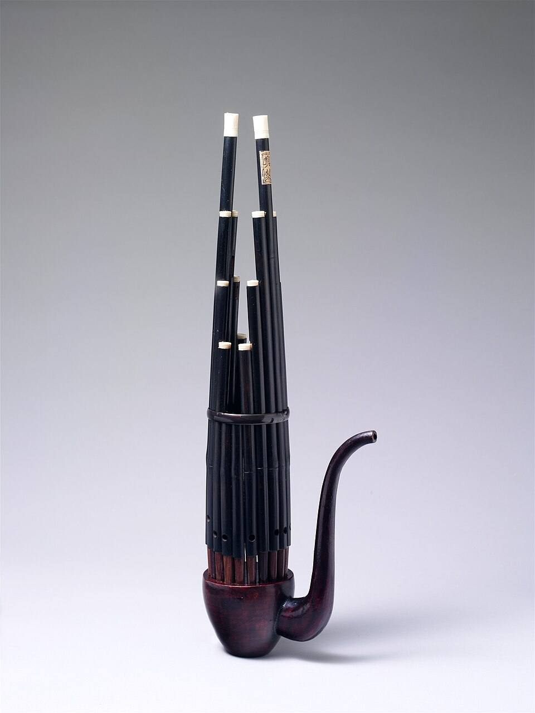
大都会艺术博物馆藏笙。可观察簧管、笙斗与吹口。
作者 / 提供者：The Metropolitan Museum of Art
原始条目：File:Sheng_MET_DP216617.jpg
授权：CC0
采用来源提供的预览版本，未改动主体内容；网页等比显示。原作者、来源及授权适用于该图片，项目代码的 MIT 许可证不替代图片授权。
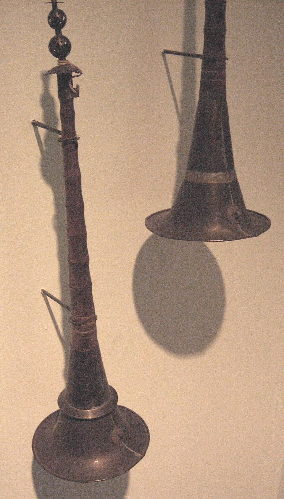
柏林东亚艺术博物馆展示的两支唢呐，展示管身与喇叭口。
作者 / 提供者：Dr. Meierhofer
原始条目：File:B-Suonas.JPG
授权：CC BY-SA 3.0
采用来源提供的预览版本，未改动主体内容；网页等比显示。原作者、来源及授权适用于该图片，项目代码的 MIT 许可证不替代图片授权。
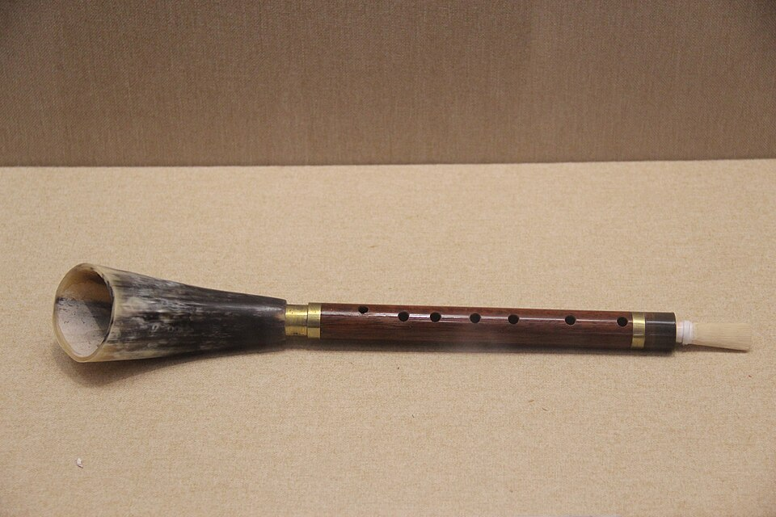
滕王阁陈列的筚篥（管子）形制，可观察哨片与短管。
作者 / 提供者：Gary Todd from Xinzheng, China
原始条目：File:Bili, Tengwangge (Prince of Teng Pavilion) (30699196364).jpg
授权：CC0
采用来源提供的预览版本，未改动主体内容；网页等比显示。原作者、来源及授权适用于该图片，项目代码的 MIT 许可证不替代图片授权。
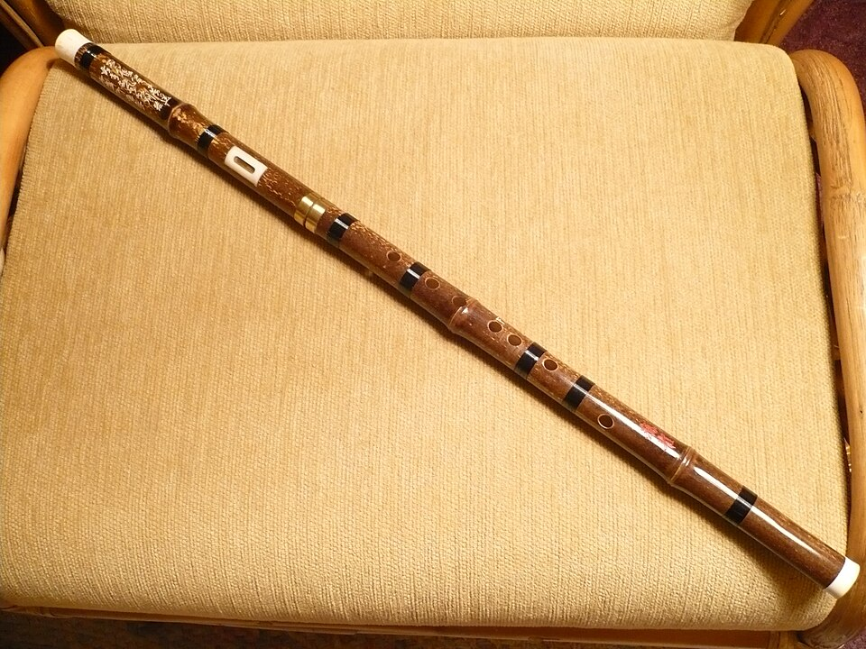
巴乌的一种实物形制。常见巴乌是带簧片的竹管，设有指孔，常见横吹形制。
作者 / 提供者：Badagnani ( talk )
原始条目：File:Bawuphoto.jpg
授权：CC BY-SA 3.0
采用来源提供的预览版本，未改动主体内容；网页等比显示。原作者、来源及授权适用于该图片，项目代码的 MIT 许可证不替代图片授权。
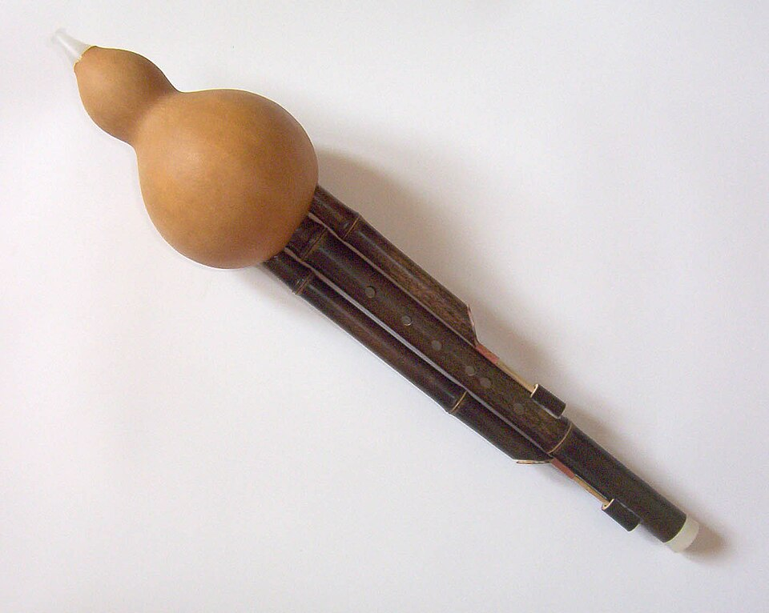
葫芦丝的一种实物形制。葫芦丝常见葫芦形气箱与主管、副管，主管有指孔。
作者 / 提供者：F.Schmidtke
原始条目：File:Hu_Lu_Si.jpg
授权：Public domain
采用来源提供的预览版本，未改动主体内容；网页等比显示。原作者、来源及授权适用于该图片，项目代码的 MIT 许可证不替代图片授权。
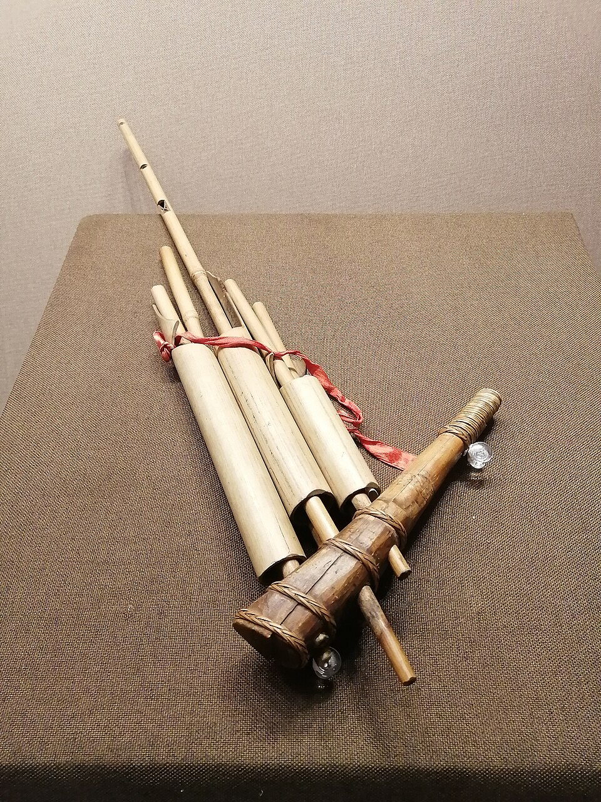
民族文化宫收藏、来自广西的芦笙，展示木斗与多支竹管。
作者 / 提供者：Yumeto
原始条目：File:20211226 Lusheng in the Cultural Palace of Nationalities.jpg
授权：CC BY-SA 4.0
采用来源提供的预览版本，未改动主体内容；网页等比显示。原作者、来源及授权适用于该图片，项目代码的 MIT 许可证不替代图片授权。
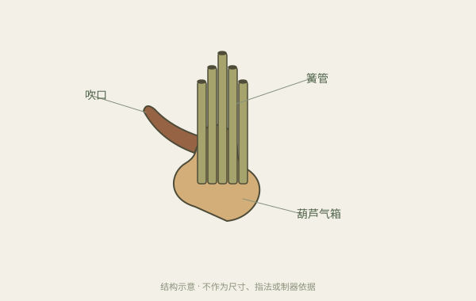
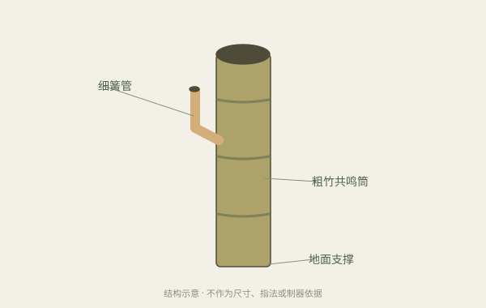
《古今图书集成》中的篪图，经维基共享资源整理。属于历史图像，不能作为现代制器尺寸或指法依据。
作者 / 提供者：Chen Menglei
原始条目：File:Imperial_Encyclopaedia_-_Music_-_pic015_-_箎.svg
授权：Public domain
采用来源提供的预览版本，未改动主体内容；网页等比显示。原作者、来源及授权适用于该图片，项目代码的 MIT 许可证不替代图片授权。
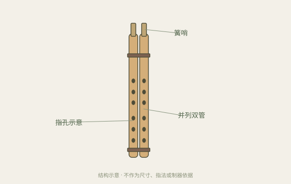
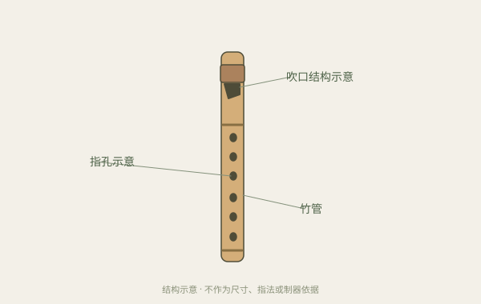
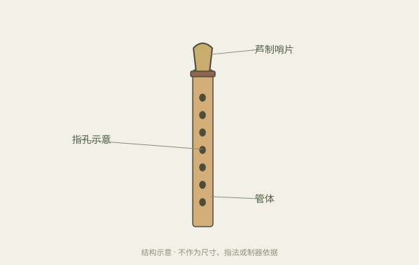
苏尔（Tsuur）演奏照片，可观察竖吹方式与长管外形。
作者 / 提供者：Bilguun52
原始条目：File:Tsuur.jpg
授权：CC BY-SA 4.0
采用来源提供的预览版本，未改动主体内容；网页等比显示。原作者、来源及授权适用于该图片，项目代码的 MIT 许可证不替代图片授权。
上海博物馆展示的藏族铜制长号，可观察细长管身与宽大的末端。
作者 / 提供者：BrokenSphere
原始条目：File:Tibetan copper horns SM.JPG
授权：CC BY 3.0
采用来源提供的预览版本，未改动主体内容；网页等比显示。原作者、来源及授权适用于该图片，项目代码的 MIT 许可证不替代图片授权。
洛杉矶郡艺术博物馆收藏的十八世纪装饰海螺号，来源标注为东藏或蒙古地区。照片展示其中一种礼仪形制。
作者 / 提供者：Los Angeles County Museum of Art
原始条目：File:Ritual Conch LACMA M.77.111.2.jpg
授权：Public domain
采用来源提供的预览版本，未改动主体内容；网页等比显示。原作者、来源及授权适用于该图片，项目代码的 MIT 许可证不替代图片授权。
小型粤式喉管，展示哨片、竹管和末端喇叭口。
作者 / 提供者：Badagnani ( talk )
原始条目：File:Houguan.jpg
授权：CC BY-SA 3.0
采用来源提供的预览版本，未改动主体内容；网页等比显示。原作者、来源及授权适用于该图片，项目代码的 MIT 许可证不替代图片授权。
编钟陈列，可观察成组悬挂与不同大小的钟体。
作者 / 提供者：The original uploader was Zzjgbc at Chinese Wikipedia .
原始条目：File:Bianzhong.jpg
授权：CC BY-SA 3.0
采用来源提供的预览版本，未改动主体内容；网页等比显示。原作者、来源及授权适用于该图片，项目代码的 MIT 许可证不替代图片授权。
湖北省博物馆曾侯乙墓编磬，可观察悬挂的曲尺形石片。
作者 / 提供者：Zhangmoon618
原始条目：File:Bianqing_from_Marquis_Yi's_tomb.jpg
授权：CC BY-SA 3.0
采用来源提供的预览版本，未改动主体内容；网页等比显示。原作者、来源及授权适用于该图片，项目代码的 MIT 许可证不替代图片授权。
云锣的一种实物形制。云锣将多面小锣固定或悬挂在框架上，组成有音高组织的乐器。
作者 / 提供者：Huang Zhen
原始条目：File:Yunluo 雲鑼.jpg
授权：CC BY 4.0
采用来源提供的预览版本，未改动主体内容；网页等比显示。原作者、来源及授权适用于该图片，项目代码的 MIT 许可证不替代图片授权。
大都会艺术博物馆藏堂鼓，可观察鼓皮、鼓身和支架。
作者 / 提供者：Creator:Elevated Tone Workshop, Guangzhou (Canton)
原始条目：File:Tánggǔ (堂鼓) MET DP219344.jpg
授权：CC0
采用来源提供的预览版本，未改动主体内容；网页等比显示。原作者、来源及授权适用于该图片，项目代码的 MIT 许可证不替代图片授权。
板鼓的一种实物形制。板鼓常见小型鼓体与集中在中央的鼓面发音区，演奏时置于鼓架。
作者 / 提供者：Gary Todd from Xinzheng, China
原始条目：File:Bangu_(Drum),_Tengwangge_(Prince_of_Teng_Pavilion)_(31393523212).jpg
授权：CC0
采用来源提供的预览版本，未改动主体内容；网页等比显示。原作者、来源及授权适用于该图片，项目代码的 MIT 许可证不替代图片授权。
韩国釜山展示的长鼓，供观察朝鲜民族长鼓的沙漏形鼓腔与双面鼓皮。不同地区的使用传统应分别了解。
作者 / 提供者：Visviva
原始条目：File:Janggu.jpg
授权：Public domain
采用来源提供的预览版本，未改动主体内容；网页等比显示。原作者、来源及授权适用于该图片，项目代码的 MIT 许可证不替代图片授权。
西安鼓楼博物馆陈列的瑶族长鼓，重点观察中段细、两端展开的轮廓。
作者 / 提供者：Gary Todd from Xinzheng, China
原始条目：File:Yao Nationality Drum (9912639833).jpg
授权：CC0
采用来源提供的预览版本，未改动主体内容；网页等比显示。原作者、来源及授权适用于该图片，项目代码的 MIT 许可证不替代图片授权。
云南民族博物馆陈列的傣族象脚鼓，展示较宽鼓面与向下延伸的鼓身。
作者 / 提供者：Daderot
原始条目：File:Musical instruments in the Yunnan Nationalities Museum - DSC03882.JPG
授权：Public domain
采用来源提供的预览版本，未改动主体内容；网页等比显示。原作者、来源及授权适用于该图片，项目代码的 MIT 许可证不替代图片授权。
上海世博会广西展区陈列的壮族早唐铜鼓，可观察铜制鼓面和鼓身。
作者 / 提供者：Gary Lee Todd, Ph.D.
原始条目：File:Expo 2010 Guangxi Exhibit, China Pavilion - Zhuang Bronze Drum, Early Tang Dynasty.jpg
授权：CC0
采用来源提供的预览版本，未改动主体内容；网页等比显示。原作者、来源及授权适用于该图片，项目代码的 MIT 许可证不替代图片授权。
梆子陈列，可观察木体与配套的击棒；地方形制并不完全一致。
作者 / 提供者：xiaowei
原始条目：File:Bangzi 3.jpg
授权：CC BY-SA 2.5
采用来源提供的预览版本，未改动主体内容；网页等比显示。原作者、来源及授权适用于该图片，项目代码的 MIT 许可证不替代图片授权。
木鱼实物，可观察开缝木体及配套的槌。
作者 / 提供者：Patrick Weemeeuw
原始条目：File:Mokugyo.jpg
授权：CC BY-SA 3.0
采用来源提供的预览版本，未改动主体内容；网页等比显示。原作者、来源及授权适用于该图片，项目代码的 MIT 许可证不替代图片授权。
潮州音乐中使用的拍板实物，展示三片硬木板与绑绳。
作者 / 提供者：Badagnani ( talk )
原始条目：File:Chaozhouban.jpg
授权：CC BY-SA 3.0
采用来源提供的预览版本，未改动主体内容；网页等比显示。原作者、来源及授权适用于该图片，项目代码的 MIT 许可证不替代图片授权。
口弦的一种实物形制。口弦常以竹或金属制成弹性簧舌，贴近口部演奏。
作者 / 提供者：Codell
原始条目：File:5_Leaf_Kouxian.jpg
授权：Public domain
采用来源提供的预览版本，未改动主体内容；网页等比显示。原作者、来源及授权适用于该图片，项目代码的 MIT 许可证不替代图片授权。
台南孔庙收藏的瑟，可观察宽长琴体及多弦结构。
作者 / 提供者：Zeze0729
原始条目：File:台南市孔廟文物收藏_樂器瑟.JPG
授权：CC BY-SA 3.0
采用来源提供的预览版本，未改动主体内容；网页等比显示。原作者、来源及授权适用于该图片，项目代码的 MIT 许可证不替代图片授权。
《古今图书集成》中的竽图，展示历史记载的一种形制。不是现代实物照片。
作者 / 提供者：Chen Menglei
原始条目：File:Imperial_Encyclopaedia_-_Music_-_pic498_-_二十四簧竽小樣圖.png
授权：Public domain
采用来源提供的预览版本，未改动主体内容；网页等比显示。原作者、来源及授权适用于该图片，项目代码的 MIT 许可证不替代图片授权。
湖北省博物馆曾侯乙墓出土筑的实物。照片展示文物现状，并非完整演奏复原图。
作者 / 提供者：Gary Todd from Xinzheng, China
原始条目：File:Five-string_Pitch_Instrument_(Zhu),_Tomb_of_Marquis_Yi_of_Zeng_(10167131206).jpg
授权：CC0
采用来源提供的预览版本，未改动主体内容；网页等比显示。原作者、来源及授权适用于该图片，项目代码的 MIT 许可证不替代图片授权。
广西龙州壮族天琴演奏者合影，可观察琴颈、圆形琴箱及持琴方式。
作者 / 提供者：Henlebury
原始条目：File:Zhuang's Women Artists in Longzhou.jpg
授权：CC BY-SA 4.0
采用来源提供的预览版本，未改动主体内容；网页等比显示。原作者、来源及授权适用于该图片，项目代码的 MIT 许可证不替代图片授权。
甘肃省博物馆陈列的腰鼓，可观察双面鼓皮及中部收腰的鼓身。
作者 / 提供者：Gary Todd from Xinzheng, China
原始条目：File:Maoyuan Waist Drum (10096134714).jpg
授权：CC0
采用来源提供的预览版本，未改动主体内容；网页等比显示。原作者、来源及授权适用于该图片，项目代码的 MIT 许可证不替代图片授权。
满族八角鼓实物，可观察八角形鼓框与蒙皮鼓面。
作者 / 提供者：Pauloleong2002
原始条目：File:Manchu Octagonal Drum.jpg
授权：CC BY-SA 4.0
采用来源提供的预览版本，未改动主体内容；网页等比显示。原作者、来源及授权适用于该图片，项目代码的 MIT 许可证不替代图片授权。